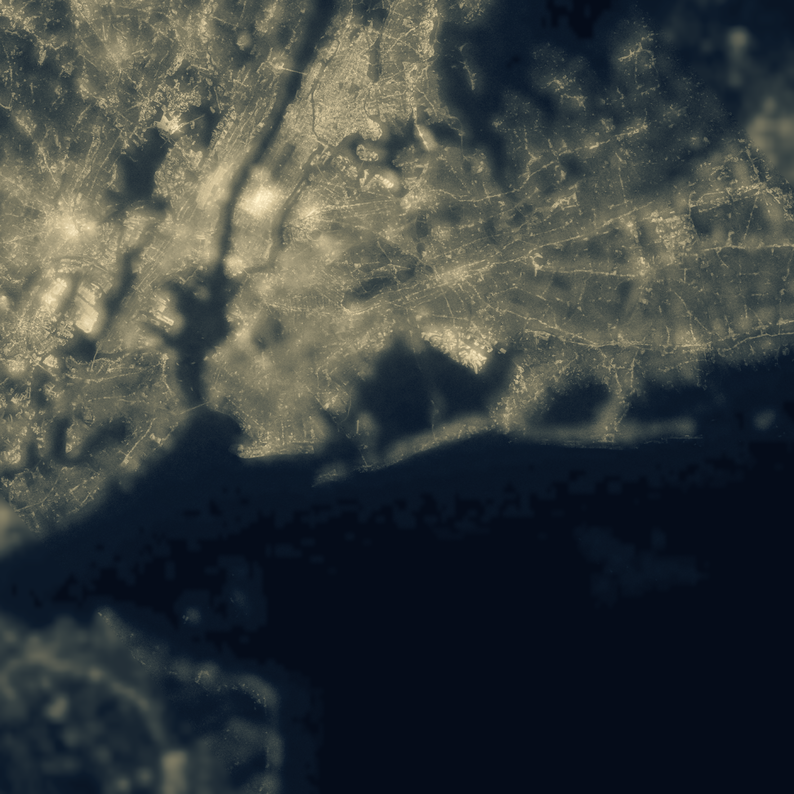
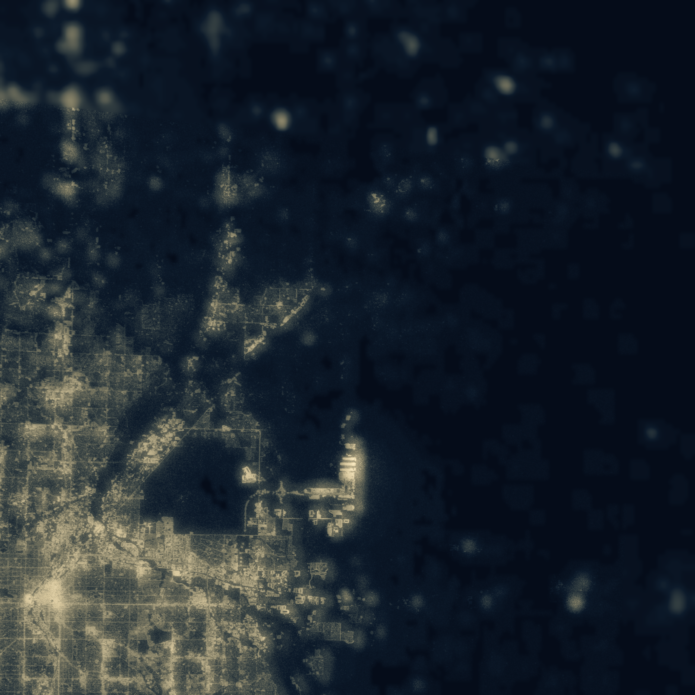

Bright Below · Leaving JFK
THE FIRST 5 MILES
N ↑
2 mi
0.0 / 5 mi
Loading track…FIRST RECORDED POSITION →
Flying home to Colorado. A little less light below.


DISTANCE COMPARISON · Same distance, different times · 5 statute miles each
as bright along the JFK segment2024 VIIRS · median ground brightness within 3 miles of the flight path
Loading the recorded flight and night maps…